Overview
Sergei Prokudin-Gorskii, a photographer working in the early 1900s, pioneered color photography in the Russian Empire at a time when color printing technology didn't yet exist. His technique involved photographing each scene three separate times, using red, green, and blue filters respectively, and recording all three exposures on a single glass plate.
The Library of Congress now preserves these digitized negatives, which are arranged with the three color separations stacked vertically — blue at the top, green in the middle, and red at the bottom. This project implements image alignment techniques to reconstruct color images from these digitized glass plate photographs.
Divide the plate into B, G, and R channels.
Trim 10% from each edge to remove dark borders.
Search for the (x, y) shift of G and R relative to B.
Combine the shifted channels into one RGB image.
Single-Scale Alignment
For the single-scale alignment, I implemented an exhaustive search method that looked through a range of [-15, 15] pixels in both x and y directions for the green and red channels relative to the blue channel. The alignment was scored using the L2 norm (sum of squared differences) to find the best offsets that minimized the difference between the channels.
I chose the L2 norm because it is simple to compute and effective for images with consistent lighting and contrast, which allowed for a fast computation time. One of the challenges I faced was the edges of the images: since the edges were dark borders, the search would sometimes find offsets that aligned the borders but not the actual content of the images. To avoid this, I cropped the images by 10% on each side.
Cathedral

Monastery
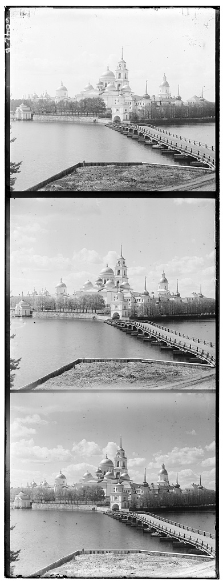
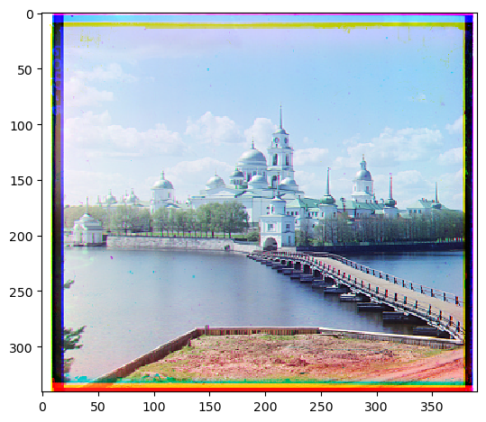
Tobolsk

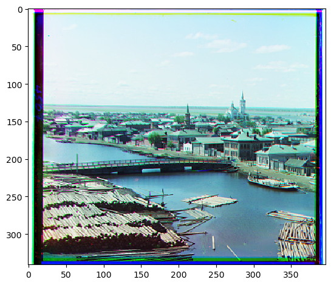
Multi-Scale Pyramid Alignment
Since the TIF files are thousands of pixels wide, a brute-force exhaustive search over the full range would be computationally expensive. I implemented a multi-scale pyramid alignment approach: I recursively downscale each image by 0.5 until it reaches 300 pixels in height. At the coarsest level, I perform an exhaustive search over [-15, 15] pixels. Since the displacement scales proportionally with image size, this search range captures much larger actual displacements at coarser scales.
I then propagate the estimated offset up the pyramid, doubling it at each level and refining it locally with a [-15, 15] search. This coarse-to-fine strategy is much faster than searching the full range at full resolution.
Scoring metric: NCC vs. L2
I used a mix of NCC and L2. I originally started with L2, but for certain pictures the L2 minimization failed because L2 is not robust to brightness variations, so I switched to NCC for those images. I chose not to use NCC for every image because it is computationally expensive: if L2 took 1 minute to align a picture, NCC took 4–5 minutes, and the gap grows with image size. So I used L2 first to find all the alignments that didn't have as many brightness variations, then used NCC for the images that didn't align with L2.
L2 = sqrt(sum((im1 - im2)^2))
Default metric. Works well when channels have similar brightness.
NCC = sum((im1 - mean(im1)) * (im2 - mean(im2))) / (std(im1) * std(im2))
Fallback for images with brightness differences between channels.
Results
14 provided images aligned with the pyramid method. Click any image to enlarge.
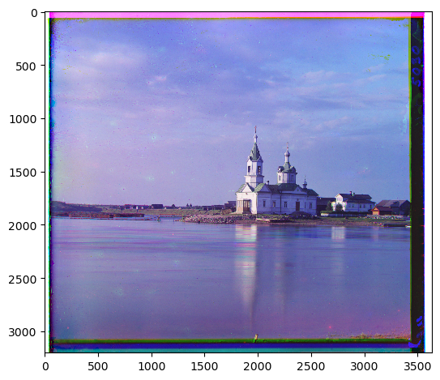
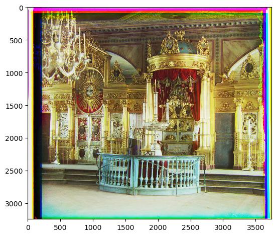
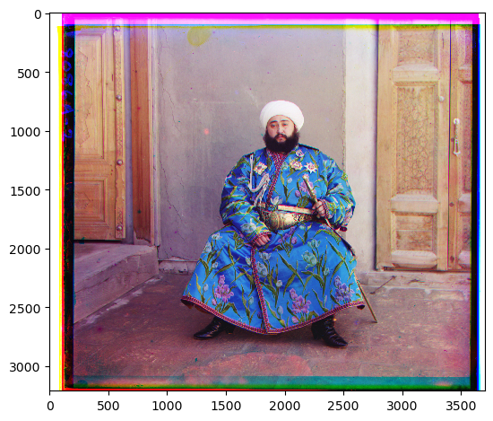
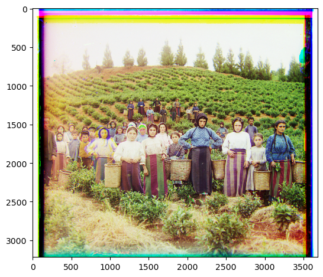
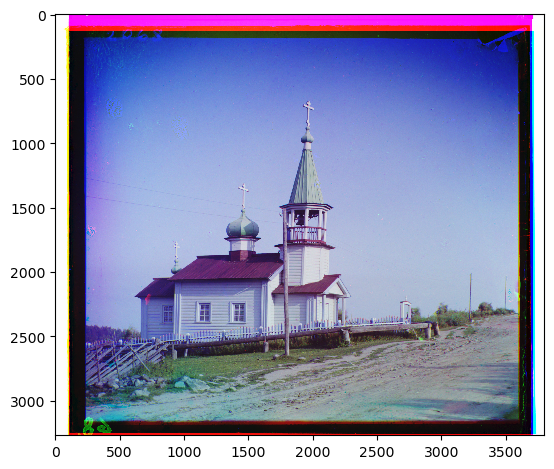
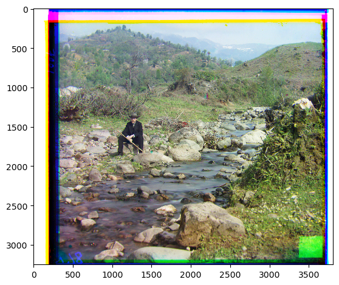
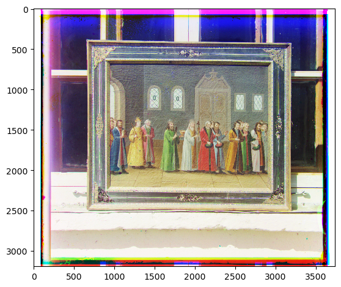
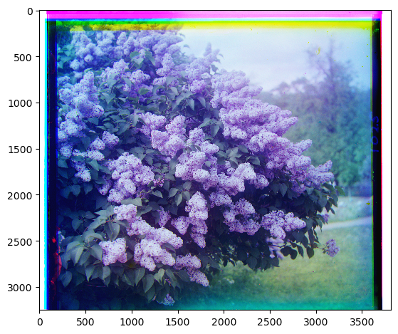
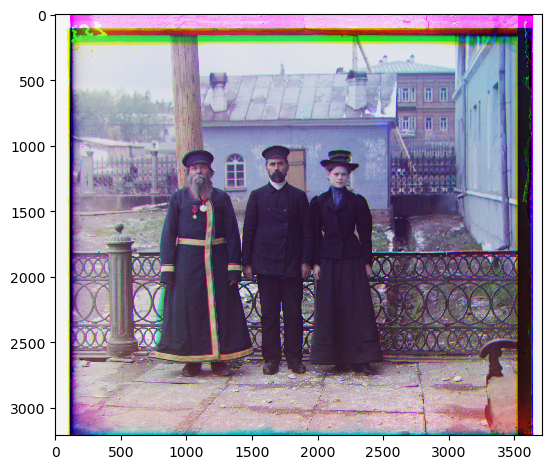
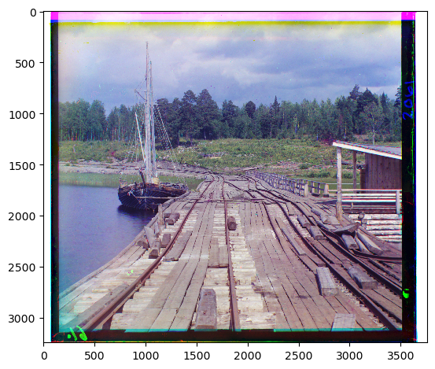
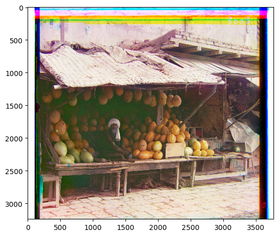
Custom Images
Three additional plates I chose from the Prokudin-Gorskii collection at the Library of Congress.
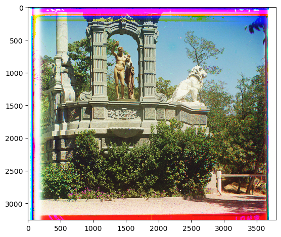
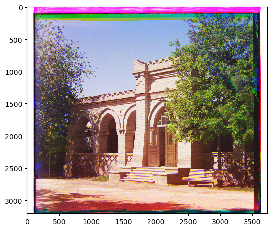
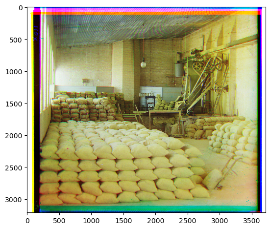
Key Insights & Lessons
It was fascinating to learn about the history of color photography and realize that photographers like Prokudin-Gorskii manually performed the alignment calculations we now automate. Understanding the mathematical complexity behind what we take for granted today was eye-opening.
A 100-pixel displacement at full resolution becomes 50 pixels at 0.5 scale, 25 at 0.25, and so on — so a small ±15 px window at each level still captures large displacements.
L2 worked well for most images but failed badly on those with significant brightness differences between channels, like melons.tif.
NCC solved the brightness problem but was 4–5× slower, so I used it only where L2 failed.